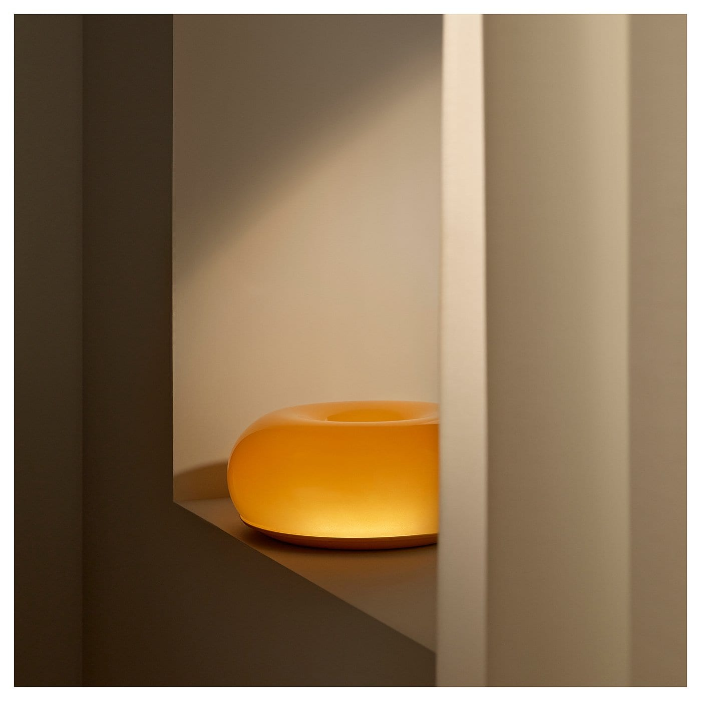

긴 우드 후보 · 리사보 200
긴 우드 후보 · 리사보 200 빛의 재질 바꾸기 · 텔뷘
빛의 재질 바꾸기 · 텔뷘 서랍과 문 수납 · 리브 140
서랍과 문 수납 · 리브 140
IKEA무선 유리등 또는 구형 무드등 자리의 대안. 추가 수량 아님
IKEA × Sabine Marcelis VARMBLIXT 바름블릭스트 LED 탁상스탠드/벽등
오렌지 유리/원형 30cm / 국내품번306.176.09. 스마트 화이트 모델306.142.48과 다른 제품
79,900원
배송비 미확정
낮에는 매끈한 오렌지 유리 오브제, 밤에는 호박빛. 흰 갓 반복을 줄이고 따뜻한 빈티지 색을 작은 면적으로 더한다.
앰버 유리 포인트
무선이 아니며 지름30cm라 작은 선반에는 큼. 공식 후기에는 주홍색보다 노란 호박빛, 스위치 위치 불편, 유리 기포에 대한 지적이 있다. 85lm의 분위기 조명으로 작업등 대용은 아님.
치수·소재·후기 근거
- 크기
- 지름30 × 높이11 / 코드200cm
- 소재
- 입으로 불어 만든 유리 갓, 스틸, ABS
- 배선·설치
- 플러그 전원. 탁상에 놓으면 타공 없이 사용. 벽걸이로 쓰면 벽 고정 나사가 필요하며 별도 판매
- 폰 제어
- 이 오렌지 제품 자체에 스마트 기능 없음. 스마트플러그 재전원 복귀는 미확인. 스마트전구로 교체하는 제품도 아님
- 후기
- 4.3점 · 후기 792개. IKEA 페이지 통합후기. 오늘의집 해당 판매자는5.0/18개로 별도 수치
- 광원
- LED 일체형 85lm. 배터리형이 아닌 유선 무드등. 전구 교체 불가.
IKEA 공식 현재가. 배송지별 재고 미확인. 오늘의집 리셀러98800원+배송5000원, 쿠폰 제외 기준이므로 공식 구매가 저렴함
판매처의 해당 색상 사진 · 연출 소품 별도
추가 근거 1 ↗